资源
-
PaperWithCode：EAST: An Efficient and Accurate Scene Text Detector | Papers With Code
-
MindSpore：models: Models of MindSpore (gitee.com)
-
Blog：
正文
我们这个模型使用单个神经网络直接预测完整图像中的任意方向和四边形的单词或文本行，消除了不必要的中间步骤（如候选聚合和单词划分）。我们的模型在 ICDAR 2015、COCO Text 和 MSRA-TD500 中都非常好使！
文本检测作为后续过程的先决条件，核心是设计特征来区分文本和背景。
提出了一个快速准确的场景文本检测流水线，使用一个**完全卷积神经网络（FCN）模型，产生单词或文本行级别的预测，排除了冗余和缓慢的中间步骤。生成的文本预测可以是旋转的矩形或四边形，将被发送到非最大抑制（Non-Maximum Suppression，NMS）**以产生最终结果。
EAST, since it is an Efficient and Accuracy Scene Text detection pipeline.
{kind=link}
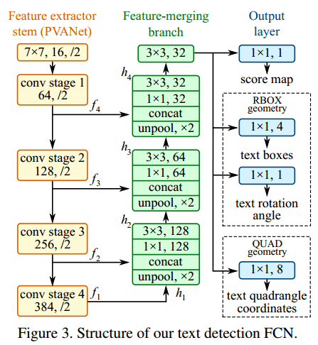
-
Feature extractor stem，特征提取炳（PVANet）
- 主干可以是在 ImageNet 数据集上预先训练的卷积网络，具有交错的卷积和池化层。从干提取四个级别的特征图，表示为 ，其大小分别为输入图像的 和 。
-
Feature-merging branch，特征合并分支
-
逐渐将它们合并（concat）：
-
是合并基数
-
是合并后的特征图
-
运算符 表示沿通道轴的串联
-
-
在每个合并阶段，来自最后一个阶段的特征图首先被馈送到 unpool 层以使其大小加倍，然后与当前特征图连接。
-
减少了通道数量并减少了计算
-
融合了信息，最终产生了这个合并阶段的输出
-
在最后一个合并阶段之后， 层生成合并分支的最终特征图，并将其提供给输出层。
-
-
Output layer，输出层
-
对文本区域的两种几何形状进行实验：
- 旋转框（RBOX）
- 4 个轴对齐边界框（AABB）
- 1 个通道旋转角度
- 四边形（QUAD）
- 使用 8 个数字来表示从四边形的四个角顶点 到像素位置的坐标偏移，由于每个距离偏移包含两个数字 ，几何输出包含 8 个通道。
- 旋转框（RBOX）
-
-
为每种几何形状设计了不同的损失函数:
-
-
表示分数图的损失，
- 是分数图的预测
- 是 ground truth
- 是正样本和负样本之间的平衡因子，
- 是分数图的预测
-
表示几何图形的损失，直接用 或 将引导损失偏向于更大和更长的文本区域。
-
在 RBOX 回归：， 取 10
-
AABB 部分采用 IoU 损失：
-
旋转角度损失：
-
-
在 QUAD 回归中采用尺度归一化平滑 损失：
-
-
表示两个损失之间的重要性，设为 1。
-
-
-
包含几个 操作，将 32 个通道的特征图投影到 1 个通道的分数图 和一个多通道的几何图 中。几何输出可以是 RBOX 或 QUAD 中的一个
将阈值应用于每个预测区域，其中得分超过预定义阈值的几何体被认为是有效的，并保存以供以后进行非最大值抑制。NMS 之后的结果被认为是管道的最终输出。ADAM 优化器，batch=24。
NMS：在假设附近像素的几何图形往往高度相关的情况下，我们建议逐行合并几何图形，在合并同一行中的几何图形时，我们将迭代合并当前遇到的几何图形和最后合并的几何图形。这种改进的技术在最佳场景中在 中运行。尽管它的最坏情况与原始情况相同，但只要局部性假设成立，该算法在实践中运行得足够快。
未来研究的可能方向包括：
- 调整几何公式，以允许直接检测弯曲文本；
- 将所述检测器与文本识别器集成；
- 将该思想扩展到通用对象检测。
代码
Pytorch
Windows
{kind=link}
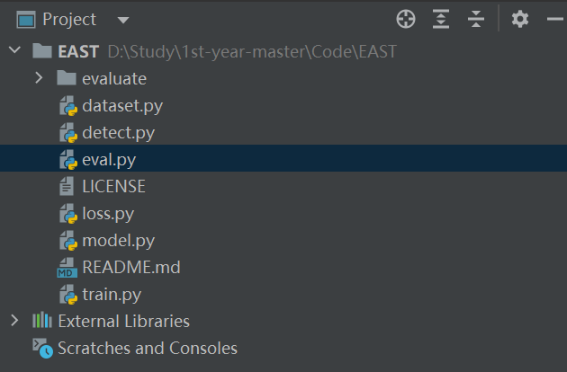
-
conda 中新建一个 EAST 环境（
conda create -n east python=3.7）并安装好：- pytorch
- shapely
- opencv-python 4.0.0.21
- lanms，巨难装，用
pip install lanms-neo==1.0.2 -i https://pypi.tuna.tsinghua.edu.cn/simple- 如果是 wsl2 的 ubuntu，
pip install lanms-proper
- 如果是 wsl2 的 ubuntu，
设置好解释器
{kind=link}
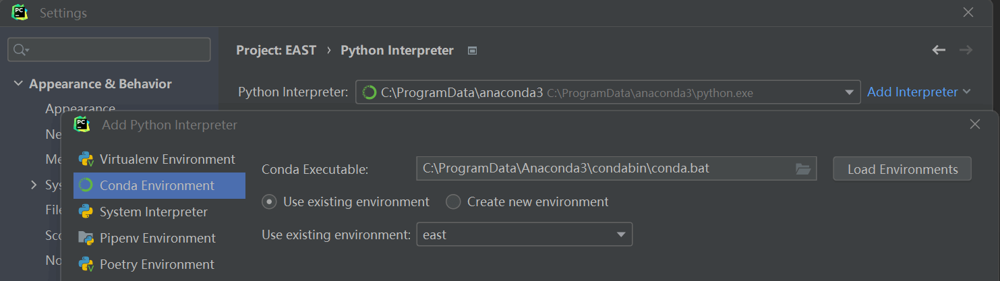

- 从 Downloads - Incidental Scene Text - Robust Reading Competition (uab.es) 下载好 ICDAR 2015 Challenge 4 数据集，解压并按规则放在对应的文件夹中（原项目想放到工程外面，我改到了工程里面）
{kind=link}
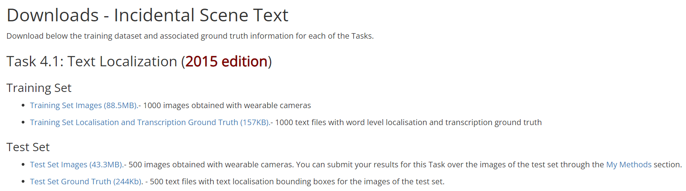
{kind=link}
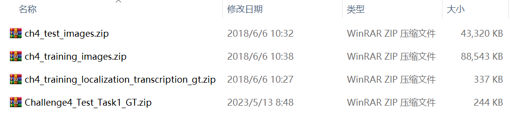
{kind=link}
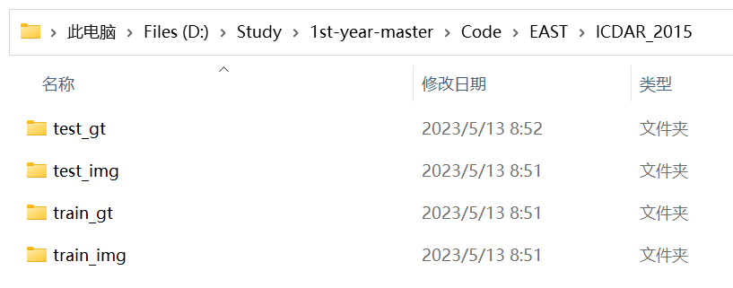

- 开跑
detect.py！
{kind=link}
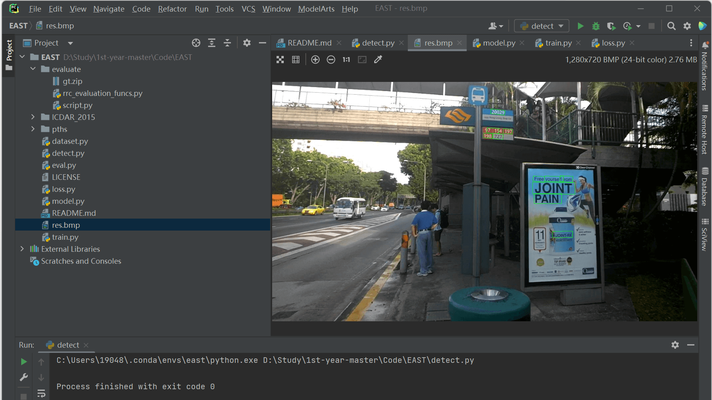
-
开跑
train.py！喜提错误：UnicodeDecodeError: 'gbk' codec can't decode byte 0xbf in position 2: illegal multibyte sequence！在dataset.py中的第 382 行with open(self.gt_files[index], 'r') as f:改成with open(self.gt_files[index], 'r', encoding='utf-8') as f:填之。 -
开跑
train.py！喜提错误：torch.cuda.OutOfMemoryError: CUDA out of memory. Tried to allocate 1.50 GiB (GPU 0; 8.00 GiB total capacity; 3.14 GiB already allocated; 2.79 GiB free; 3.15 GiB reserved in total by PyTorch) If reserved memory is >> allocated memory try setting max_split_size_mb to avoid fragmentation. See documentation for Memory Management and PYTORCH_CUDA_ALLOC_CONF！在train.py里把batch_size = 24改成batch_size = 4填之。 -
开跑
train.py！能跑了！
WSL2
装好环境
conda create -n EAST python=3.7
conda activate EAST
pip install shapely
pip install opencv-python==4.0.0.21
pip install lanms-proper开跑！
python3 train.py喜提错误：
File "/home/gz/anaconda3/envs/EAST/lib/python3.7/site-packages/cv2/__init__.py", line 3, in <module>
from .cv2 import *
ImportError: libSM.so.6: cannot open shared object file: No such file or directory
填：
sudo apt update
sudo apt install libsm6喜提错误：
Could not load library libcudnn_cnn_infer.so.8. Error: libcuda.so: cannot open shared object file: No such file or directory
Please make sure libcudnn_cnn_infer.so.8 is in your library path!
安装 CUDNN：
sudo apt install nvidia-cuda-toolkit
开跑！
/home/gz/anaconda3/envs/EAST/lib/python3.7/site-packages/torch/optim/lr_scheduler.py:143: UserWarning: Detected call of `lr_scheduler.step()` before `optimizer.step()`. In PyTorch 1.1.0 and later, you should call them in the opposite order: `optimizer.step()` before `lr_scheduler.step()`. Failure to do this will result in PyTorch skipping the first value of the learning rate schedule. See more details at https://pytorch.org/docs/stable/optim.html#how-to-adjust-learning-rate
"https://pytorch.org/docs/stable/optim.html#how-to-adjust-learning-rate", UserWarning)
/home/gz/anaconda3/envs/EAST/lib/python3.7/site-packages/shapely/set_operations.py:133: RuntimeWarning: invalid value encountered in intersection
return lib.intersection(a, b, **kwargs)
/home/gz/anaconda3/envs/EAST/lib/python3.7/site-packages/shapely/set_operations.py:133: RuntimeWarning: invalid value encountered in intersection
return lib.intersection(a, b, **kwargs)
/home/gz/anaconda3/envs/EAST/lib/python3.7/site-packages/shapely/set_operations.py:133: RuntimeWarning: invalid value encountered in intersection
return lib.intersection(a, b, **kwargs)
/home/gz/anaconda3/envs/EAST/lib/python3.7/site-packages/shapely/set_operations.py:133: RuntimeWarning: invalid value encountered in intersection
return lib.intersection(a, b, **kwargs)
classify loss is 0.98071122, angle loss is 0.68633509, iou loss is 5.08373260
Epoch is [1/600], mini-batch is [1/250], time consumption is 8.06183171, batch_loss is 12.92779446
classify loss is 0.99145019, angle loss is 0.75015461, iou loss is 4.81786251
Epoch is [1/600], mini-batch is [2/250], time consumption is 0.21901011, batch_loss is 13.31085873
classify loss is 0.99974638, angle loss is 0.74429435, iou loss is 5.48675823
Epoch is [1/600], mini-batch is [3/250], time consumption is 0.21214652, batch_loss is 13.92944813
classify loss is 0.99397326, angle loss is 0.60727608, iou loss is 3.27876091
Epoch is [1/600], mini-batch is [4/250], time consumption is 0.22212124, batch_loss is 10.34549522
classify loss is 0.99331516, angle loss is 0.67070889, iou loss is 3.67775035
Epoch is [1/600], mini-batch is [5/250], time consumption is 0.23853326, batch_loss is 11.37815380
classify loss is 0.98511696, angle loss is 0.73328424, iou loss is 3.17167139
Epoch is [1/600], mini-batch is [6/250], time consumption is 0.20371103, batch_loss is 11.48963070
classify loss is 0.99793059, angle loss is 0.60213274, iou loss is 4.67736626
...
MindSpore
读代码
train.py
好像跟其他的train.py差不多，设置完各种参数然后加载模型和优化器，开跑！
各种细节都在src/里。
from src.util import AverageMeter, get_param_groups
from src.east import EAST, EastWithLossCell
from src.logger import get_logger
from src.initializer import default_recurisive_init
from src.dataset import create_east_dataset
from src.lr_scheduler import get_lr这段代码主要是对所需的模块进行引用，包括平均数计算、网络参数获取、EAST 模型、损失函数、日志记录、参数初始化、EAST 数据集和学习率调度器。
首先，从
src.util模块中引入AverageMeter()和get_param_groups()方法，分别用于计算平均数和获取网络中需要训练的参数。接着，从
src.east模块中引入EAST类和EastWithLossCell类，分别表示 EAST 模型和组合了损失函数的 EAST 模型。然后，从
src.logger模块中引入get_logger()方法，用于获取日志记录器。接下来，从
src.initializer模块中引入default_recursive_init()方法，用于对 EAST 模型进行默认的递归初始化。再者，从
src.dataset模块中引入create_east_dataset()方法，用于创建 EAST 数据集。最后，从
src.lr_scheduler模块中引入get_lr()方法，用于获取当前 epoch 的学习率。
-
设置 Parser 变量
-
设置分布式计算参数
-
设置 ModelArts 相关参数
-
设置相关路径（数据集、日志输出地址）
-
代码加速优化相关
-
加载模型
-
设置优化器
-
开始训练
先使用 Argparse 模块创建一个 ArgumentParser 对象，用于解析命令行参数。
ArgumentParser('mindspore icdar training')：创建一个 ArgumentParser 对象，并把 'mindspore icdar training' 作为参数传入，即设置程序的描述信息为 mindspore icdar training。
Parser 变量
设备相关：
| name | type | default | help |
|---|---|---|---|
| --device_target | str | Ascend | device where the code will be implemented. |
| --device_id | int | 0 | device id where the model will be implemented. |
数据集相关：
| name | type | default | help |
|---|---|---|---|
| --data_dir | str | './data/icdar2015/Training/' | Train dataset directory. |
| --per_batch_size | int | 8 | Batch size for Training. |
| --outputs_dir | str | 'outputs/' | output dir. |
神经网络相关：
| name | type | default | help |
|---|---|---|---|
| --pretrained_backbone | str | './data/vgg/XXX.ckpt' | The ckpt file of ResNet. |
| --resume_east | str | The ckpt file of EAST, which used to fine tune. （模型微调） |
优化器和学习率相关：
| name | type | default | help |
|---|---|---|---|
| --lr_scheduler | str | 'my_lr' | Learning rate scheduler（学习率调整策略）, options: exponential（指数衰减）, cosine_annealing（余弦退火）. Default: cosine_annealing |
| --lr | float | 0.001 | Learning rate. |
| --per_step | float | 2 | Learning rate change times. |
| --lr_gamma | float | 0.1 | Decrease lr by a factor of exponential lr_scheduler.（将 lr 减少指数 lr_scheduler系数） |
| --eta_min | float | 0. | Eta_min in cosine_annealing scheduler. |
| --t_max | int | 100 | T-max in cosine_annealing scheduler. |
| --max_epoch | int | 600 | Max epoch num to train the model. |
| --warmup_epochs | float(?) | 6 | Warmup epochs. |
| --weight_decay | float | 0.0005 | Weight decay factor. |
损失函数相关：
| name | type | default | help |
|---|---|---|---|
| --loss_scale | int | 1 | Static loss scale.（静态损失标度） |
| --resume_east | str | 7,7 | Epoch of changing of lr changing, split with ","（改变 lr 的 epoch 变化，用 “，” 拆分） |
日志相关：
| name | type | default | help |
|---|---|---|---|
| --log_interval | int | 10 | Logging interval steps.（记录间隔步骤） |
| --ckpt_path | str | 'outputs/' | Checkpoint save location. |
| --ckpt_interval | int | 1000（太大了吧，牛逼） | Save checkpoint interval.（保存检查点间隔） |
| --is_save_on_master | int | 1 | Save ckpt on master or all rank, 1 for master, 0 for all ranks.（这个 master 和 rank 应该跟分布式计算有关） |
分布式计算相关：
| name | type | default | help |
|---|---|---|---|
| --is_distributed | int | 0 | Distribute train or not, 1 for yes, 0 for no. |
| --rank | int | 0 | Local rank of distributed. |
| --group_size | int | 1 | World size of device. |
**profiler（性能分析器）**相关：
| name | type | default | help |
|---|---|---|---|
| --need_profiler | int | 0 | Whether use profiler. 0 for no, 1 for yes. |
modelArts相关：
| name | type | default | help |
|---|---|---|---|
| --is_modelArts | int | 0 | Trainning in modelArts or not, 1 for yes, 0 for no. |
分布式计算
这段代码主要是设置 Mindspore 的分布式计算的参数，我并不想动它。
args, _ = parser.parse_known_args()
args.device_id = int(os.getenv("DEVICE_ID", "0"))
args.rank = args.device_id
ms.set_context(mode=ms.GRAPH_MODE, device_target=args.device_target, device_id=args.device_id)
if args.is_distributed:
comm.init()
args.rank = comm.get_rank()
args.group_size = comm.get_group_size()
ms.set_auto_parallel_context(parallel_mode=ms.ParallelMode.DATA_PARALLEL, gradients_mean=True,
device_num=args.group_size)ModelArts
ModelArts 相关的参数，但是我把它设为 0 依然能跑？
这段代码主要是用于处理在华为云ModelArts平台上运行时的数据和模型路径。
首先判断
args.is_modelArts是否为True，如果是，则意味着程序运行在华为云ModelArts平台上，需要对存储路径进行修改。接着，导入
moxing库，这个库是华为云针对ModelArts平台的Python SDK，提供了丰富的API用于读写数据、上传下载文件等操作。然后，根据当前进程的编号（即
args.rank变量）生成本地数据路径和本地模型路径，并将模型文件从远程路径（即args.pretrained_backbone）重命名为本地模型路径。接下来，使用
mox.file.copy_parallel()方法将数据从远程路径（即args.data_dir）拷贝到本地数据路径。最后，将输出路径（即
args.outputs_dir）设置为/cache目录下的子目录。在ModelArts平台上运行程序时，程序的输出也需要放在/cache目录下，以保证数据的持久化存储。
if args.is_modelArts:
import moxing as mox
local_data_url = os.path.join('/cache/data', str(args.rank))
local_ckpt_url = os.path.join('/cache/ckpt', str(args.rank))
local_ckpt_url = os.path.join(local_ckpt_url, 'backbone.ckpt')
mox.file.rename(args.pretrained_backbone, local_ckpt_url)
args.pretrained_backbone = local_ckpt_url
mox.file.copy_parallel(args.data_dir, local_data_url)
args.data_dir = local_data_url
args.outputs_dir = os.path.join('/cache', args.outputs_dir)相关路径
设置相关路径（数据集、日志）：
args.data_root = os.path.abspath(os.path.join(args.data_dir, 'image'))
args.txt_root = os.path.abspath(os.path.join(args.data_dir, 'groundTruth'))
# 使用当前进程的编号（即 args.rank 变量）作为子目录名称，拼接成完整的输出文件夹路径
outputs_dir = os.path.join(args.outputs_dir, str(args.rank))
# 获取当前时间作为子目录名称，再次拼接成完整的输出文件夹路径
args.outputs_dir = os.path.join(
args.outputs_dir,
datetime.datetime.now().strftime('%Y-%m-%d_time_%H_%M_%S'))
args.logger = get_logger(args.outputs_dir, args.rank) # 调用 get_logger()函数创建一个日志记录器，并将日志保存在 args.outputs_dir 目录下
args.logger.save_args(args) # 将所有参数保存在日志文件中if __name__ == "__main__":
优化
进行代码加速优化：
if args.need_profiler:
# 创建一个性能分析器，并将结果保存在args.outputs_dir路径下
profiler = Profiler(
output_path=args.outputs_dir,
is_detail=True,
is_show_op_path=True)
# 创建一个AverageMeter对象用于记录损失值的平均值，以便后续输出和打印
loss_meter = AverageMeter('loss')
# 重置自动并行上下文
context.reset_auto_parallel_context()
parallel_mode = ParallelMode.STAND_ALONE
degree = 1
# 又是分布式计算相关……
if args.is_distributed:
parallel_mode = ParallelMode.DATA_PARALLEL
degree = args.group_size
context.set_auto_parallel_context(
parallel_mode=parallel_mode,
gradients_mean=True,
device_num=degree)加载模型
network = EAST() # 设置 network，加载 EAST 模型
# default is kaiming-normal
default_recurisive_init(network) # 对 EAST 模型进行默认的递归初始化。这里使用的是 kaiming-normal（He 正态分布）初始化方法
# load pretrained_backbone
if args.pretrained_backbone: # 如果不为 None，载入预训练的 backbone 模型
parm_dict = load_checkpoint(args.pretrained_backbone) # 加载模型参数
load_param_into_net(network, parm_dict) # 将模型参数加载到 network 上
args.logger.info('finish load pretrained_backbone') # 在日志中记录加载完成的信息
network = EastWithLossCell(network) # 将 EAST 模型和损失函数进行结合，即将模型传入 EastWithLossCell()函数，得到组合后的模型对象
if args.resume_east: # 如果 args.resume_east 不为 None，继续训练之前保存的 EAST 模型，resume：恢复，继续
param_dict = load_checkpoint(args.resume_east)
load_param_into_net(network, param_dict)
args.logger.info('finish get resume east')
args.logger.info('finish get network')
# 载入数据集，调用 create_east_dataset()函数，传入图片文件夹路径、文本文件夹路径、批量大小、设备数量、进程编号等参数，获取数据集以及数据总数，并在日志中记录加载完成的信息。
ds, data_size = create_east_dataset(img_root=args.data_root, txt_root=args.txt_root, batch_size=args.per_batch_size,
device_num=args.group_size, rank=args.rank, is_training=True)
args.logger.info('Finish loading dataset')
# 计算每个 epoch 中的步数，即将数据总数、批量大小和设备数量进行计算得到
args.steps_per_epoch = int(
data_size /
args.per_batch_size /
args.group_size)
if not args.ckpt_interval:
# 如果 args.ckpt_interval 为空，则将其设置为每个 epoch 的步数
args.ckpt_interval = args.steps_per_epoch设置优化器
# get learnning rate
lr = get_lr(args) # 函数获取当前epoch的学习率，并将其赋值给变量lr
opt = Adam( # 使用Adam优化器进行优化，并指定优化器的参数为EAST模型中需要更新的参数
params=get_param_groups(network),
learning_rate=Tensor(
lr,
ms.float32))
loss_scale = FixedLossScaleManager(1.0, drop_overflow_update=True) # 固定的损失缩放管理器
model = Model(network, optimizer=opt, loss_scale_manager=loss_scale) # 使用Model函数从EAST模型对象和优化器拼接出一个完整的训练模型，并将损失缩放管理器传入
# 这样就生成了完整的训练模型对象，并且可以对其进行训练训练
开始训练：
network.set_train() # 将网络设置为训练状态
# save the network model and parameters for subsequence fine-tuning
# 设置保存检查点的配置信息，包括保存检查点的步数和最大保存数量，并将其赋值给变量 config_ck
config_ck = CheckpointConfig(
save_checkpoint_steps=100,
keep_checkpoint_max=1)
# group layers into an object with training and evaluation features
# 指定模型参数保存路径
save_ckpt_path = os.path.join(
args.outputs_dir, 'ckpt_' + str(args.rank) + '/')
# 使用 ModelCheckpoint()函数创建一个回调函数，用于保存训练模型参数
ckpoint_cb = ModelCheckpoint(
prefix="checkpoint_east",
directory=save_ckpt_path,
config=config_ck)
# 创建一个回调函数，用于保存训练模型参数。其中，prefix 参数指定保存文件名的前缀，directory 参数指定保存路径，config 参数指定保存配置信息。
callback = [
TimeMonitor(data_size=data_size),
LossMonitor(),
ckpoint_cb
]
# 调用 model.train()方法对训练模型进行训练，传入总 epoch 数、数据集以及之前定义的回调函数列表。在训练过程中，启用了数据集下沉模式，即 dataset_sink_mode=True，以提高训练效率
model.train(
args.max_epoch,
ds,
callbacks=callback,
dataset_sink_mode=True)
args.logger.info('========end training=============')src/util.py
定义了一些工具人类和函数，看不懂 orz：
class AverageMeter：记录各个指标的训练过程中的平均值和当前值default_wd_filter()：定义了一个默认的权重衰减过滤器函数，过滤掉不需要进行权重衰减的参数，例如偏置项和批归一化层中的偏置项和权重get_param_groups()：接受一个神经网络模型network作为参数，并将其可训练参数分成有权重衰减和无权重衰减两个组，并返回一个包含参数组信息的列表，每个参数组都包含params和weight_decay两个键值对class ShapeRecord：记录图像大小的类
src/east.py
class EAST
定义了一个 EAST 网络的类 EAST：
class EAST(nn.Cell):
def __init__(self):
super(EAST, self).__init__()
# 提取图像特征的模块，返回 5 组特征图用于后续处理
self.extractor = VGG16FeatureExtraction()
# 将特征图组合的模块，将 5 组特征图拼接在一起，形成更为丰富多样的特征信息用于后续处理
self.merge = Merge()
# 输出模块，对拼接后的特征图进行卷积处理来得到文本区域预测分数 score 和几何信息预测值 geo
self.output = Output()
def construct(self, x_1):
# 通过 x_1 输入数据调用 self.extractor()获取 5 组特征图
f_0, f_1, f_2, f_3, f_4 = self.extractor(x_1)
# 将这些特征图传入 self.merge()模块进行拼接，得到拼接后的特征图
x_1 = self.merge(f_0, f_1, f_2, f_3, f_4)
# 将该特征图输入到 self.output()模块获得文本区域预测分数 score 和几何信息预测值 geo
score, geo = self.output(x_1)
return score, geo代码对应的就是论文里的三个部分了：
Feature extractor stem (PVANet)-class VGG16FeatureExtraction- 提取图像特征的模块，返回 5 组特征图用于后续处理
Feature-merging branch-class Merge- 将特征图组合的模块，将 5 组特征图拼接在一起，形成更为丰富多样的特征信息用于后续处理
Output layer-class Output- 输出模块，对拼接后的特征图进行卷积处理来得到文本区域预测分数
score和几何信息预测值geo
- 输出模块，对拼接后的特征图进行卷积处理来得到文本区域预测分数
class VGG16FeatureExtraction
大致就是定义了一堆卷积核，然后按照论文里的方式一阵卷，返回 5 组特征图，但是特征图的标号好像跟论文里是反着来的。
class VGG16FeatureExtraction(nn.Cell):
"""VGG16FeatureExtraction for deeptext"""
def __init__(self):
super(VGG16FeatureExtraction, self).__init__()
self.relu = nn.ReLU()
self.max_pool = nn.MaxPool2d(kernel_size=2, stride=2)
self.avg_pool = nn.AvgPool2d(kernel_size=2, stride=2)
self.conv1_1 = _conv(
in_channels=3,
out_channels=64,
kernel_size=3,
padding=1)
……
self.conv5_3 = _conv(
in_channels=512,
out_channels=512,
kernel_size=3,
padding=1)
self.cast = P.Cast()
def construct(self, out):
""" Construction of VGG """
f_0 = out
out = self.cast(out, mstype.float32)
out = self.conv1_1(out)
out = self.relu(out)
out = self.conv1_2(out)
out = self.relu(out)
out = self.max_pool(out)
……
out = self.max_pool(out)
f_4 = out
out = self.conv5_1(out)
out = self.relu(out)
out = self.conv5_2(out)
out = self.relu(out)
out = self.conv5_3(out)
out = self.relu(out)
out = self.max_pool(out)
f_5 = out
return f_0, f_2, f_3, f_4, f_5class Merge
P是 MindSpore 中的一个模块，代表了运算符(operators)。我们可以通过import mindspore.ops as P来引入这个模块，从而使用其中定义的各种运算符函数，例如上述代码中使用的Concat()和ResizeBilinear()函数。
也是定义一堆函数：
ResizeBilinear()：是 MindSpore 中的一个图像处理函数，在图像上进行双线性插值，将输入图像缩放到指定大小。由于该模型中需要特征融合操作，因此使用该函数将不同尺度的特征图调整到相同尺寸，便于进行特征拼接。concat()：特征图拼接nn.BatchNorm2d(128)：是 MindSpore 中的一个二维批归一化函数，用于对网络模型中的卷积层或全连接层的输出进行归一化处理，以便更好地协调不同神经元之间的协同工作。relu()：激活函数
class Merge(nn.Cell):
def __init__(self):
super(Merge, self).__init__()
self.conv1 = nn.Conv2d(1024, 128, 1, has_bias=True)
self.bn1 = nn.BatchNorm2d(128)
self.relu1 = nn.ReLU()
self.conv2 = nn.Conv2d(
128,
128,
3,
padding=1,
pad_mode='pad',
has_bias=True)
self.bn2 = nn.BatchNorm2d(128)
self.relu2 = nn.ReLU()
……
def construct(self, x, f1, f2, f3, f4):
img_hight = P.Shape()(x)[2]
img_width = P.Shape()(x)[3]
out = P.ResizeBilinear((img_hight / 16, img_width / 16), True)(f4)
out = self.concat((out, f3))
out = self.relu1(self.bn1(self.conv1(out)))
out = self.relu2(self.bn2(self.conv2(out)))
out = P.ResizeBilinear((img_hight / 8, img_width / 8), True)(out)
out = self.concat((out, f2))
out = self.relu3(self.bn3(self.conv3(out)))
out = self.relu4(self.bn4(self.conv4(out)))
out = P.ResizeBilinear((img_hight / 4, img_width / 4), True)(out)
out = self.concat((out, f1))
out = self.relu5(self.bn5(self.conv5(out)))
out = self.relu6(self.bn6(self.conv6(out)))
out = self.relu7(self.bn7(self.conv7(out)))
return outclass Output
class Output(nn.Cell):
def __init__(self, scope=512):
super(Output, self).__init__()
self.conv1 = nn.Conv2d(32, 1, 1)
self.sigmoid1 = nn.Sigmoid()
self.conv2 = nn.Conv2d(32, 4, 1)
self.sigmoid2 = nn.Sigmoid()
self.conv3 = nn.Conv2d(32, 1, 1)
self.sigmoid3 = nn.Sigmoid()
self.scope = scope
self.concat = P.Concat(axis=1)
self.PI = 3.1415926535898
def construct(self, x):
score = self.sigmoid1(self.conv1(x)) # 文本区域得分
loc = self.sigmoid2(self.conv2(x)) * self.scope # 位置
angle = (self.sigmoid3(self.conv3(x)) - 0.5) * self.PI # 倾斜角度
geo = self.concat((loc, angle)) # 边界框信息包含位置和倾斜角度
return score, geo # 最终返回文本区域得分和拼接后的边界框信息class EastLossBlock
在该模块计算损失时，首先计算分类损失，即将预测得到的文本区域得分与真实标注的文本区域得分进行比较，采用 Dice 系数计算分类损失。
接着，将预测得到的位置信息和真实标注的位置信息分别拆分出来，通过计算交并比（IoU）和角度误差得到位置损失，最终通过加权平均作为总体的位置损失。其中，角度误差使用余弦相似度计算。
在计算位置损失时，还需考虑训练集中的样本是否为真实文本区域，需将训练集中非文本区域处的位置信息、分类标注和对应的模型预测结果剔除掉，以避免这些数据对损失计算的干扰。
最后将分类损失和位置损失加权求和，作为总体损失并返回。
class EastLossBlock(nn.Cell):
def __init__(self):
super(EastLossBlock, self).__init__()
self.split = P.Split(1, 5)
self.min = MyMin()
self.log = P.Log()
self.cos = P.Cos()
self.mean = P.ReduceMean(keep_dims=False)
self.sum = P.ReduceSum()
self.eps = 1e-5
self.dice = DiceCoefficient()
def construct(
self,
y_true_cls,
y_pred_cls,
y_true_geo,
y_pred_geo,
training_mask):
ans = self.sum(y_true_cls)
# 将预测得到的文本区域得分与真实标注的文本区域得分进行比较，采用 Dice 系数计算分类损失
classification_loss = self.dice(
y_true_cls, y_pred_cls * (1 - training_mask))
# n * 5 * h * w
# 将预测得到的位置信息和真实标注的位置信息分别拆分出来
d1_gt, d2_gt, d3_gt, d4_gt, theta_gt = self.split(y_true_geo)
d1_pred, d2_pred, d3_pred, d4_pred, theta_pred = self.split(y_pred_geo)
area_gt = (d1_gt + d3_gt) * (d2_gt + d4_gt)
area_pred = (d1_pred + d3_pred) * (d2_pred + d4_pred)
w_union = self.min(d2_gt, d2_pred) + self.min(d4_gt, d4_pred)
h_union = self.min(d1_gt, d1_pred) + self.min(d3_gt, d3_pred)
area_intersect = w_union * h_union
area_union = area_gt + area_pred - area_intersect
# 通过计算交并比（IoU）和角度误差得到位置损失
iou_loss_map = -self.log((area_intersect + 1.0) /
(area_union + 1.0)) # iou_loss_map
angle_loss_map = 1 - self.cos(theta_pred - theta_gt) # angle_loss_map
# 角度误差使用余弦相似度计算
angle_loss = self.sum(angle_loss_map * y_true_cls) / ans
iou_loss = self.sum(iou_loss_map * y_true_cls) / ans
geo_loss = 10 * angle_loss + iou_loss
return geo_loss + classification_lossclass EastWithLossCell
class EastWithLossCell(nn.Cell):
def __init__(self, network):
super(EastWithLossCell, self).__init__()
# 传入一个EAST模型，作为计算图中的网络模块
self.east_network = network
# 实例化了EastLossBlock类，作为计算图中的损失函数模块
self.loss = EastLossBlock()
def construct(self, img, true_cls, true_geo, training_mask):
'''
img: 输入图片
true_cls: 分类标注
true_geo: 位置标注
training_mask: 训练集中的掩码（用于过滤掉非真实文本区域的数据）
'''
# 调用计算图进行前向计算
socre, geometry = self.east_network(img)
# 将计算得到的分类得分和位置信息分别传给损失函数模块进行后向计算，得到整体的损失值并返回
loss = self.loss(
true_cls,
socre,
true_geo,
geometry,
training_mask)
return losssrc/dataset.py
create_east_dataset()
def create_east_dataset(
img_root,
txt_root,
batch_size,
device_num,
rank,
is_training=True):
# 实例化 ICDAREASTDataset 类，传入图片和文本标注的路径，用于读取并解析图像和标注
east_data = ICDAREASTDataset(img_path=img_root, gt_path=txt_root)
# 生成分布式采样器，用于在多个设备之间对数据进行划分和分发。
distributed_sampler = DistributedSampler(
len(east_data), device_num, 0 if device_num == 1 else rank, shuffle=True)
trans_list = [CV.RandomColorAdjust(0.5, 0.5, 0.5, 0.25), # 随机改变图像的颜色饱和度、对比度和亮度
CV.Rescale(1 / 255.0, 0), # 对图像进行缩放
CV.Normalize((0.5, 0.5, 0.5), (0.5, 0.5, 0.5)), # 图像正则化处理
CV.HWC2CHW()] # 将图像的通道维度从 HWC（高×宽×通道数）顺序转换为 CHW（通道数×高×宽）顺序
if is_training: # 如果是训练模式
dataset_column_names = [
"image", # 图像
"score_map", # 分类标注分数图
"geo_map", # 位置标注几何图
"training_mask"] # 训练集掩码
# 调用 MindSpore 中的 GeneratorDataset 类生成数据集
ds = de.GeneratorDataset(
east_data,
column_names=dataset_column_names,
num_parallel_workers=32, # 数据处理和增强过程中使用的并行线程数
# sampler 参数则指定了数据采样器，即从数据集中选择数据样本的方式，
# 本例中使用的是前面提到的分布式采样器 distributed_sampler
sampler=distributed_sampler)
# 调用 map()方法将数据集中的图像列传入变换列表中的操作进行增广
ds = ds.map(
operations=trans_list,
input_columns=["image"],
num_parallel_workers=8,
python_multiprocessing=True)
# 使用 batch()方法将批量大小对数据集进行划分
ds = ds.batch(batch_size, num_parallel_workers=8, drop_remainder=True)
return ds, len(east_data)class ICDAREASTDataset
class ICDAREASTDataset:
def __init__(self, img_path, gt_path, scale=0.25, length=512):
super(ICDAREASTDataset, self).__init__()
self.img_files = [os.path.join(
img_path,
img_file) for img_file in sorted(os.listdir(img_path))]
self.gt_files = [
os.path.join(
gt_path,
gt_file) for gt_file in sorted(
os.listdir(gt_path))]
self.scale = scale # 缩放比例
self.length = length # 裁剪后的图像长度
def __getitem__(self, index):
with open(self.gt_files[index], 'r') as f:
lines = f.readlines()
vertices, labels = extract_vertices(lines) # 从文本标注中提取文本区域的顶点坐标和标注
img = Image.open(self.img_files[index]) # 读取图像
img, vertices = adjust_height(img, vertices) # 调整高度
img, vertices = rotate_img(img, vertices) # 随机旋转图像
img, vertices = crop_img(img, vertices, labels, self.length) # 将图像切割成指定长度的大小
score_map, geo_map, ignored_map = get_score_geo(
img, vertices, labels, self.scale, self.length) # 分类标注分数图、位置标注几何图和忽略标注
score_map = score_map.transpose(2, 0, 1)
ignored_map = ignored_map.transpose(2, 0, 1)
geo_map = geo_map.transpose(2, 0, 1)
if np.sum(score_map) < 1:
score_map[0, 0, 0] = 1
return img, score_map, geo_map, ignored_map
def __len__(self):
return len(self.img_files)extract_vertices()
def extract_vertices(lines):
'''extract vertices info from txt lines
Input:
lines : list of string info 输入是一个字符串列表 lines，其中每个字符串包含了一个文本区域的信息，包括顶点坐标和标签等
Output:
vertices: vertices of text regions <numpy.ndarray, (n,8)> 所有文本区域的顶点坐标
labels : 1->valid, 0->ignore, <numpy.ndarray, (n,)> 标签
'''
labels = [] # 存储最终的标签
vertices = [] # 存储顶点信息
for line in lines:
# 通过 rstrip()和 lstrip()函数去除其前后空格和 BOM（Byte Order Mark）等特殊字符，并使用 split()函数将其切分为一个包含八个整数的列表
vertices.append(list(map(int, line.rstrip('\n').lstrip('\ufeff').split(',')[:8])))
label = 0 if '###' in line else 1
labels.append(label)
# 返回顶点和标签的 numpy 数组
return np.array(vertices), np.array(labels)adjust_height()
def adjust_height(img, vertices, ratio=0.2):
'''adjust height of image to aug data
Input:
img : PIL Image
vertices : vertices of text regions <numpy.ndarray, (n,8)>
ratio : height changes in [0.8, 1.2]
Output:
img : adjusted PIL Image
new_vertices: adjusted vertices
'''
ratio_h = 1 + ratio * (np.random.rand() * 2 - 1) # 随机调整输入图像的高度
old_h = img.height
# 根据输入的高度缩放比例ratio_h，计算调整后的图像新高度new_h。
# 原始图像的高度由变量old_h指定，通过乘以缩放比例并四舍五入取整来得到调整后的高度。
# np.around()函数是NumPy库中的一个函数，用于对数组进行四舍五入，其默认精度为0
new_h = int(np.around(old_h * ratio_h))
img = img.resize((img.width, new_h), Image.BILINEAR)
new_vertices = vertices.copy()
if vertices.size > 0:
new_vertices[:, [1, 3, 5, 7]] = vertices[:, [1, 3, 5, 7]] * (new_h / old_h)
# 返回调整后的图像和更新后的顶点坐标
return img, new_verticesrotate_img()
def rotate_img(img, vertices, angle_range=10):
'''rotate image [-10, 10] degree to aug data
Input:
img : PIL Image
vertices : vertices of text regions <numpy.ndarray, (n,8)>
angle_range : rotate range
Output:
img : rotated PIL Image
new_vertices: rotated vertices
'''
# 获得中心旋转点
center_x = (img.width - 1) / 2
center_y = (img.height - 1) / 2
angle = angle_range * (np.random.rand() * 2 - 1)
# 使用了 BILINEAR 滤波器来进行图像插值，以获得更好的旋转效果
img = img.rotate(angle, Image.BILINEAR)
# 定义一个大小为 vertices.shape 的全零 NumPy 数组 new_vertices，用于存储旋转后的顶点坐标
new_vertices = np.zeros(vertices.shape)
for i, vertice in enumerate(vertices):
# 遍历每个文本区域的顶点坐标，调用 rotate_vertices()函数来计算旋转后的新坐标，然后将其保存到 new_vertices 中
new_vertices[i, :] = rotate_vertices(
vertice, -angle / 180 * math.pi, np.array([[center_x], [center_y]]))
return img, new_verticescrop_img()
def crop_img(img, vertices, labels, length):
'''crop img patches to obtain batch and augment
Input:
img : PIL Image
vertices : vertices of text regions <numpy.ndarray, (n,8)>
labels : 1->valid, 0->ignore, <numpy.ndarray, (n,)>
length : length of cropped image region
Output:
region : cropped image region
new_vertices: new vertices in cropped region
'''
# 获取原始图像的高度h和宽度w
h, w = img.height, img.width
# confirm the shortest side of image >= length
# 如果其中较小的一边小于指定的裁剪长度，则使用PIL库提供的resize()方法将图像缩放到相应的大小
if h >= w and w < length:
img = img.resize((length, int(h * length / w)), Image.BILINEAR)
elif h < w and h < length:
img = img.resize((int(w * length / h), length), Image.BILINEAR)
ratio_w = img.width / w
ratio_h = img.height / h
assert (ratio_w >= 1 and ratio_h >= 1)
# 如果其中较小的一边小于指定的裁剪长度，则使用PIL库提供的resize()方法将图像缩放到相应的大小
new_vertices = np.zeros(vertices.shape)
if vertices.size > 0:
new_vertices[:, [0, 2, 4, 6]] = vertices[:, [0, 2, 4, 6]] * ratio_w
new_vertices[:, [1, 3, 5, 7]] = vertices[:, [1, 3, 5, 7]] * ratio_h
# find random position
# 生成随机的裁剪位置，检查裁剪区域是否与文本区域相交，避免将裁剪区域中的文本区域遮盖或截断
remain_h = img.height - length
remain_w = img.width - length
flag = True
cnt = 0
while flag and cnt < 1000:
# 若随机裁剪的位置与文本区域有交集，则继续生成新的随机位置，
# 直到找到一个合适的位置或者超过最大尝试次数1000次为止
cnt += 1
start_w = int(np.random.rand() * remain_w)
start_h = int(np.random.rand() * remain_h)
flag = is_cross_text([start_w, start_h], length,
new_vertices[labels == 1, :])
box = (start_w, start_h, start_w + length, start_h + length)
# 使用PIL库提供的crop()方法从原始图像中截取指定大小的区域，并将其作为本函数的输出返回。
region = img.crop(box)
if new_vertices.size == 0:
# 如果不存在任何文本区域，则直接返回裁剪后的图像区域和空的新顶点坐标
return region, new_vertices
# 更新文本区域的顶点坐标。将新的裁剪图像左上角的坐标(start_w, start_h)作为原点，计算相对于这个原点的顶点坐标，并将这个相对坐标赋值给new_vertices
new_vertices[:, [0, 2, 4, 6]] -= start_w
new_vertices[:, [1, 3, 5, 7]] -= start_h
return region, new_verticeseval.py
先使用 argparse 设置一堆参数：
| name | type | default | help |
|---|---|---|---|
| --device_target | str | 'Ascend' | evice where the code will be implemented. (Default: Ascend) |
| --device_num | int | 5 | 设备数，如果只有 1 个设备的话，设成 5 不能跑，设成 0 能跑 |
| --test_img_path | str | './data/icdar2015/Test/images/' | 测试集地址 |
| --checkpoint_path | str | 模型地址 |
context.set_context(
mode=context.GRAPH_MODE, # 图模式
device_target=args.device_target, # 设备类型
save_graphs=False, # 是否保存计算图
device_id=args.device_num) # 设备编号main
设置一下模型、数据集、保存路径、开跑！
if __name__ == '__main__':
model_name = args.checkpoint_path
test_img_path = args.test_img_path
submit_path = './submit'
eval_model(model_name, test_img_path, submit_path)eval_model()
def eval_model(name, img_path, submit, save_flag=True):
'''
name: 模型的 checkpoint 文件路径
img_path: 测试集图片所在的文件夹路径
submit: 输出结果保存的文件夹路径
save_flag: 是否保存中间结果
'''
# 判断输出结果保存的目录是否存在，如果存在则删除该目录及其子目录，然后重新创建一个同名目录
if os.path.exists(submit):
shutil.rmtree(submit)
os.mkdir(submit)
# 构建 EAST 模型
network = EAST()
# 加载预训练权重参数
param_dict = load_checkpoint(name)
load_param_into_net(network, param_dict)
# 设置模型为训练模式
network.set_train(True)
start_time = time.time()
# 调用 detect_dataset()函数对测试集图片进行检测，并将检测结果保存到指定的输出目录 submit 中
detect_dataset(network, img_path, submit)
os.chdir(submit)
res = subprocess.getoutput('zip -q submit.zip *.txt')
res = subprocess.getoutput('mv submit.zip ../')
os.chdir('../')
# 调用评估脚本./evaluate/script.py 来计算模型的性能指标，评估结果保存在字符串变量 res 中
res = subprocess.getoutput(
'python ./evaluate/script.py -g=./evaluate/gt.zip -s=./submit.zip')
print(res)
os.remove('./submit.zip')
print('eval time is {}'.format(time.time() - start_time))
if not save_flag:
# 如果 save_flag 为 False，则删除输出目录及其子目录（闻到了屎山的味道）
shutil.rmtree(submit)detect.py
detect_dataset()
def detect_dataset(model, test_img_path, submit_path):
"""
detection on whole dataset, save .txt results in submit_path
Input:
model : detection model 模型实例
device : gpu if gpu is available
test_img_path: dataset path 测试图片所在文件夹的路径
submit_path : submit result for evaluation 提交结果保存路径
"""
# 读取测试集中所有的图片，并按照文件名排序
img_files = os.listdir(test_img_path)
img_files = sorted([os.path.join(test_img_path, img_file)
for img_file in img_files])
for i, img_file in enumerate(img_files):
# 对于每一张图片，调用detect()函数进行目标检测，返回目标框的坐标信息
print('evaluating {} image'.format(i), end='\r')
boxes = detect(Image.open(img_file), model)
seq = []
if boxes is not None:
# 如果检测结果不为空，则将框的坐标信息转换成符合要求的字符串序列并加入到列表seq中
seq.extend([','.join([str(int(b))
for b in box[:-1]]) + '\n' for box in boxes])
# 将序列seq保存为与当前图片名称相同的.txt文件格式，并将其写入submit_path目录下
with open(os.path.join(submit_path, 'res_' +
os.path.basename(img_file).replace('.jpg', '.txt')), 'w') as f:
f.writelines(seq) # 当检测完成后，输出log信息提示检测进度detect()
def detect(img, model):
"""detect text regions of img using model
Input:
img : PIL Image
model : detection model
device: gpu if gpu is available
Output:
detected polys
"""
# 将输入图片进行尺寸调整与相应的 ratio 变换，得到调整后的图片、高宽比例 ratio_h 和 ratio_w
img, ratio_h, ratio_w = resize_img(img)
# 利用模型对调整后的图片进行文字区域检测，得到概率图 score 和文本框参数 geo
score, geo = model(load_pil(img))
# 对概率图和文本框参数使用 PaddlePaddle 中的 Squeeze()函数进行维度降低（由 4 维转为 3 维）
score = P.Squeeze(0)(score)
geo = P.Squeeze(0)(geo)
# 从降维后的概率图和文本框参数中获取文本框坐标信息，即调用 get_boxes()函数
boxes = get_boxes(score.asnumpy(), geo.asnumpy())
# 根据之前的高宽比例 ratio_h 和 ratio_w，调整并计算出检测到的文本框在原始图片上的坐标信息，即调用 adjust_ratio()函数
return adjust_ratio(boxes, ratio_w, ratio_h)get_boxes()
def get_boxes(score, geo, score_thresh=0.9, nms_thresh=0.2):
"""get boxes from feature map
Input:
score : score map from model <numpy.ndarray, (1,row,col)> 概率图
geo : geo map from model <numpy.ndarray, (5,row,col)> 文本框参数
score_thresh: threshold to segment score map 置信度阈值
nms_thresh : threshold in nms 非极大值抑制阈值
Output:
boxes : final polys <numpy.ndarray, (n,9)>
"""
# 对输入的score进行降维，即将其转化为二维数组
score = score[0, :, :]
# 在降维后的score数组中，找到大于score_thresh的点，并以(r,c)的格式记录下来，形成一个n x 2的矩阵xy_text
xy_text = np.argwhere(score > score_thresh) # n x 2, format is [r, c]
# 按行排序xy_text，以保证前面的点在结果中优先考虑
if xy_text.size == 0:
return None
# 将xy_text中的坐标信息转化为正确的x,y坐标（由于降维之前是按行major的顺序排列，因此需要将列号作为x坐标，行号作为y坐标）
xy_text = xy_text[np.argsort(xy_text[:, 0])]
valid_pos = xy_text[:, ::-1].copy() # n x 2, [x, y]
# 从降维后的geo数组中提取出与xy_text中相应位置点相关的文本框参数，形成5 x n的矩阵valid_geo
valid_geo = geo[:, xy_text[:, 0], xy_text[:, 1]] # 5 x n
# 利用restore_polys()函数将valid_pos和valid_geo还原为文本框的坐标点集polys_restored，并得到对应的索引值index
polys_restored, index = restore_polys(valid_pos, valid_geo, score.shape)
if polys_restored.size == 0:
return None
# 将polys_restored表示为(n,8)大小的数组，其中前8列分别为文本框像素点的坐标，第9列为该文本框的置信度（即所在score map中的值）
boxes = np.zeros((polys_restored.shape[0], 9), dtype=np.float32)
boxes[:, :8] = polys_restored
boxes[:, 8] = score[xy_text[index, 0], xy_text[index, 1]]
# 对polys_restored执行非极大值抑制（NMS）操作，得到最终的文本框坐标信息boxes
boxes = lanms.merge_quadrangle_n9(boxes.astype('float32'), nms_thresh)
return boxesadjust_ratio()
根据之前的高宽比例 ratio_h 和 ratio_w，调整并计算出检测到的文本框在原始图片上的坐标信息
def adjust_ratio(boxes, ratio_w, ratio_h):
"""refine boxes
Input:
boxes : detected polys <numpy.ndarray, (n,9)>
ratio_w: ratio of width
ratio_h: ratio of height
Output:
refined boxes
"""
if boxes is None or boxes.size == 0:
return None
boxes[:, [0, 2, 4, 6]] /= ratio_w
boxes[:, [1, 3, 5, 7]] /= ratio_h
return np.around(boxes)跑！
- 变更一个 mindspore 2.0 的镜像，太旧的 mindspore 会寄……

- 从 EAST for Ascend - Gitee.com 把仓库整下来，最好整到
work/文件夹里，这样服务器重启过后数据还能保留。训练这玩意还需要：
-
Dataset: ICDAR 2015: Focused Scene Text，这个数据集，1000 张训练集，500 张测试集
-
The
pretrained_pathshould be a checkpoint of vgg16 trained on Imagenet2012. vgg 在 Imagenet2012 里预训练过的模型，它还不给下载地址，让我找老半天，哼-
从 MindSpore 官网 - 资源 - Hub 搜索
vgg16，找到 下载地址，下载vgg16_ascend_v190_imagenet2012_official_cv_top1acc73.49_top5acc91.56.ckpt
-
{kind=link}
{kind=link}
- 调整仓库里的 parser 参数、数据集的位置和预训练模型的位置，使得路径对应一致。
In this project, the file organization is recommended as below:
. └─data ├─icdar2015 ├─Training # Training set ├─image # Images in training set ├─groundTruth # GT in training set └─Test # Test set ├─image # Images in training set ├─groundTruth # GT in training set
{kind=link}
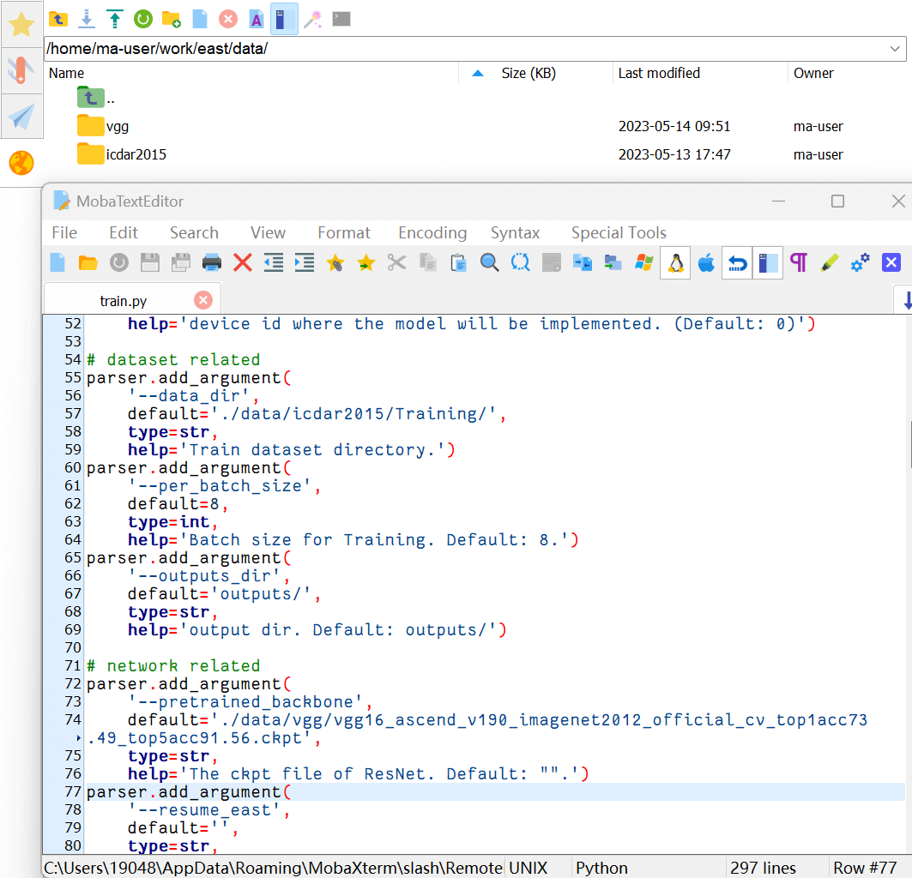
- 安装环境一条龙！
requirements.txt里面的玩意着实难装，还是手动装好了……
source activate base # 第一次进服务器激活需要 activate base
python -c "import mindspore;mindspore.run_check()" # 查看 mindspore 版本
conda create -n east --clone base # 克隆 base 环境
conda activate east # 激活 east 环境
pip install numpy
pip install opencv-python
pip install shapely
pip install pillow
pip install lanms-neo
pip install --upgrade setuptools # 更新 setuptools
pip install Polygon3 # 这个库很难装，可能需要更新 setuptools
pip install onnxruntime 装好环境后可以保存一下镜像，这样下次重开服务器的时候就会保留之前安装好的环境：
{kind=link}
- 切到仓库目录，开跑
train.py！
cd /home/ma-user/work/east/
python3 train.py{kind=link}
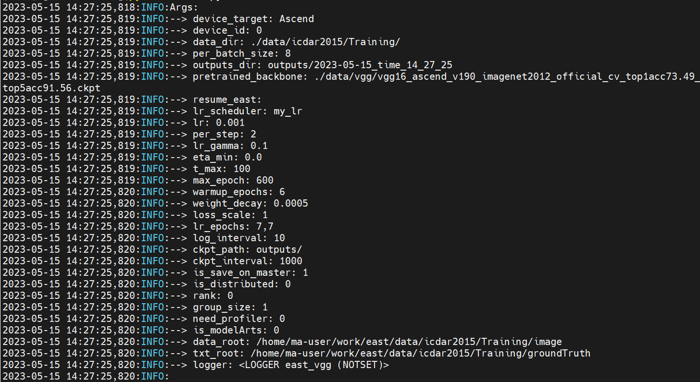
显示完超参数后，就开始 train 了，继续等呗。
{kind=link}
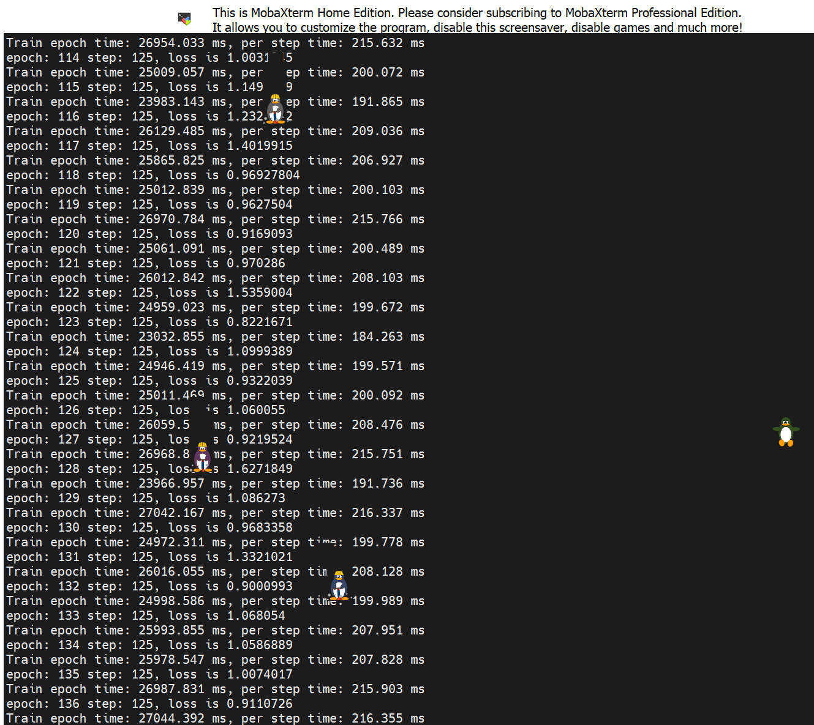
- 训练时间从
14:27到18:41，就能炼出仙丹一枚：checkpoint_east-600_125.ckpt
{kind=link}
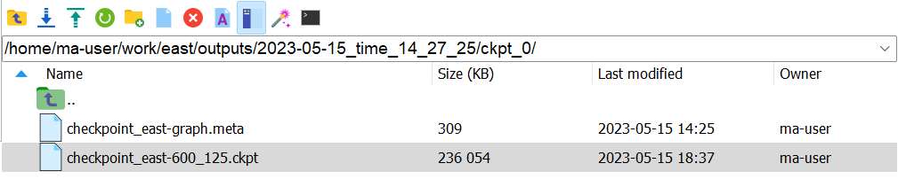
- 设置一下
eval.py的参数：
--device_numAscend 设备的数量，因为我只租了 1 个，所以设为 0--test_img_path测试集路径，evaluate 时会读取这里面的图片--checkpoint_path模型的路径，把它设为刚刚炼好的仙丹的路径：outputs/2023-05-15_time_14_27_25/ckpt_0/checkpoint_east-600_125.ckpt
{kind=link}
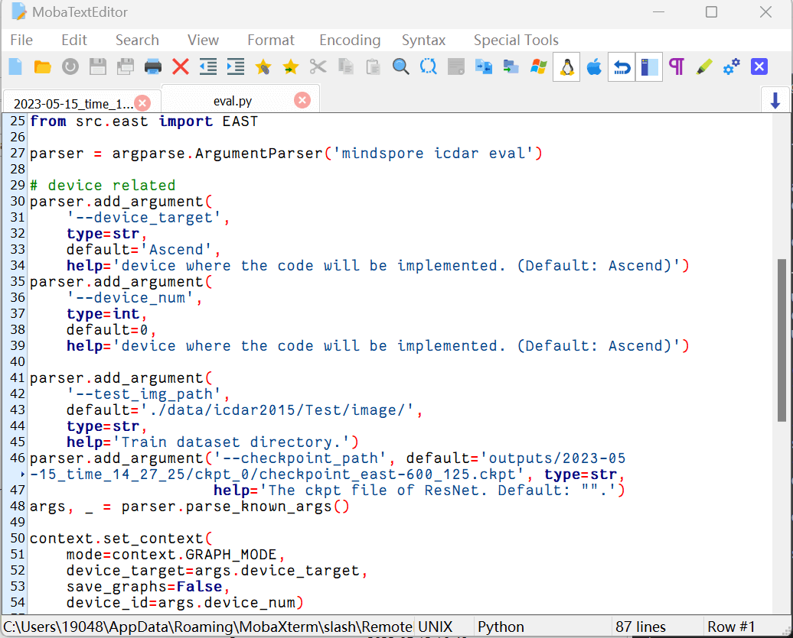
-
The evaluation scripts are from ICDAR Offline evaluation and have been modified to run successfully with Python 3.7.1.
从上面这个链接里下载
script_test_ch4_t1_e1-1577983151.zip，并放在evaluate/中：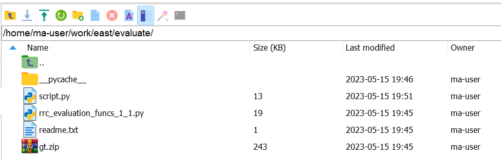
-
开跑
eval.py！
{kind=link}
python3 eval.py 然后就能在 submit\ 里查看评估结果，和 ground truth 参考一下，能识别一点点东西。
{kind=link}
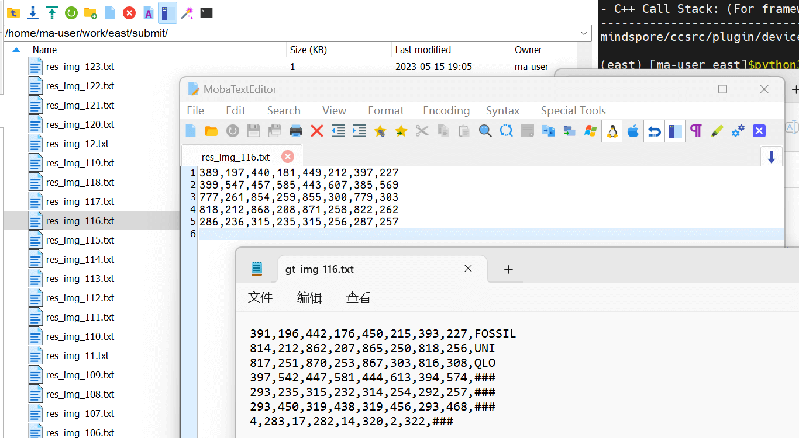
返回出来的效果比它宣传的要差好多啊，呜呜呜……
Calculated!{"precision": 0.527431421446384, "recall": 0.6109773712084737, "hmean": 0.566138746375195, "AP": 0}